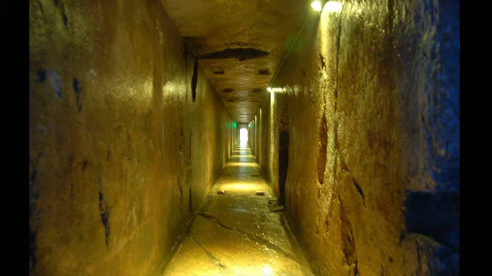
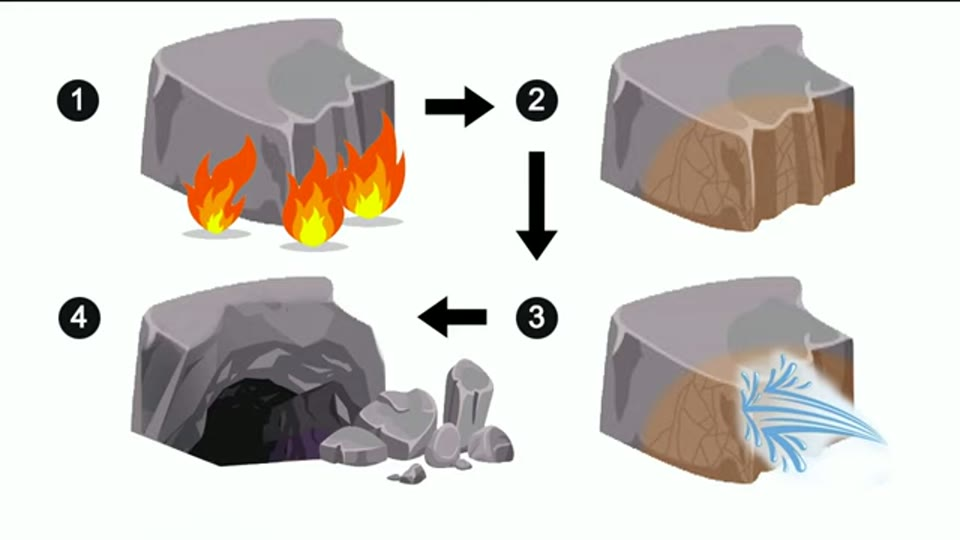

Curious Being
Was this Ancient Royal Tomb a Prehistory Megalithic Site Built by a Much Older Civilization?
Tina · 17 min · watch on YouTube · summarised 2026-09-27
Guishan Tomb at Xuzhou is the burial of a Han king and his queen, cut into a granite hill more than 2,100 years ago and identified only by a small silver seal bearing the king's name. Two adjacent caves, one for each, joined by a short passage; fifteen chambers; the site robbed long ago 00:40–01:33.
She sets out five characteristics, and the video is better organised than most of this period.
What is actually impressive about it
02:20–06:18 The corridors are about 1 m wide and 56 m long, cut almost perfectly parallel with a stated deviation of 5 mm. Ceiling height is 1.78 m, so anyone taller has to stoop. Chamber roofs come in several forms — hipped, flat, pyramidal. Corners are cut square with sharp arrises. There are beam holes, post holes, and niches at the entrance shaped like mortise and tenon joints. Each tomb has a round well with a drainage system, which she notes is uncommon in Chinese tombs.
The tomb covers over 700 m², so the spoil — she reckons more than two Olympic pools' worth — had to come out through those low narrow corridors.

The approach corridors are about a metre wide and 56 metres long, cut almost perfectly parallel.
The observation the argument is built on
06:19–08:02 In a structure of that precision there is one anomaly: the 1.9 m passage linking the king's cave to the queen's. It is crooked, lopsided and asymmetric — square and larger on the queen's side, smaller and curved on the king's — and plainly worse than everything around it.
Her reading: the caves were found, not made, by the king's people. All they had to do was join two existing chambers, and even that they could not do properly.

The short passage joining the king's tomb to the queen's is crude, unlike everything around it - while carrying, she says, the same tool marks.
Two finishes, and the rest of the case
08:03–10:15 Most walls, pillars and ceilings carry large uniform ridge-and-groove marks, which she compares to Yangshan, Baalbek and Petra. Some rooms and both shaft corridors are smooth, "on par with modern stone walls", and some chambers have smooth walls under a marked ceiling — which she reads as work interrupted before the smooth finish was carried everywhere. The smooth surfaces remind her of Peru.
One chamber, and only one, has knobs on its ceiling and pillar.
10:49–13:38 She states the comparison and its terms plainly. The Mancheng tomb of another king, contemporary, about 400 miles away, is also cut into a hill — but it was made by fire-setting: heating the rock, quenching it with cold water to crack it off. The method is documented in Eastern Han sources and the result is a rough tunnel-like space. Her question is why that king did not use whatever was used at Guishan.

A contemporary king's rock-cut tomb 400 miles away was made by fire-setting, and the result is crude.
13:40–16:21 The fifth point. Guishan is austere to the point of being an outlier. Han tombs are famous for decoration; she shows contemporary tombs in the same region built of brick — far easier to make — carrying carved reliefs that were originally painted, stepped cove ceilings and sculpted pillars, and murals and frescoes from other Western Han tombs.
Guishan has none. And robbery does not explain it: tomb raiders did not take built-in slabs or frescoes, and removing them would leave traces. The smooth corridor walls were the obvious place for reliefs. The king reigned twelve years, and Chinese rulers normally began their tombs on accession, so there was time.
Her conclusion: the caves predate the king, his men repurposed them, and they could not fix the finish, add reliefs, or even cut a decent connecting passage, because granite is very hard.
What you can check yourself
- The 5 mm deviation over 56 m is a published figure and can be checked against the excavation report.
- The connecting passage is there to be photographed, and whether it carries the same marks as the chambers is a visual comparison anyone at the site can make.
- The absence of decoration is checkable, as is her claim that no removal traces exist — that is exactly what an excavation report would record.
- The Mancheng tomb is excavated and published, and the fire-setting method is documented in Han sources. This is ordinary archaeology she reports accurately.
- The brick tombs with reliefs are in the same region and era and can be compared directly.
- The well and drainage system can be inspected.
What the video does not settle
- She says the crooked passage carries the same tool marks as the rest of the tomb. The passage is the crude, badly aligned part of the site, and the marks are what the lost-technology reading rests on. The point is raised in one sentence and not returned to.
- Granite is given as 6.5 on Mohs, "consider steel is also 6.5" 02:33–02:50. A rock and an alloy are quoted against the same scale with no note of what it measures — the same use of it recorded at the Chinese caves video. The same channel gives sandstone as 4–5 in the Yangshan video and 6–7 elsewhere.
- "Impossible to duplicate even today" rests on the size of one machine. Drum cutters will not fit down a 1 m corridor. Whether the corridor was cut from outside inwards, and with what, is not discussed.
- Her fourth point is that the style is confined to one region and a short period. What that confinement would mean on any other reading is not considered.
- The austerity is not tested against any other explanation. The site's robbery, which she mentions elsewhere in the video, is not brought to bear on it, and no comparison of what survives in a granite tomb against a plastered brick one is offered.
- The king is named on screen and not in the commentary. A site interpretation panel visible in one frame reads "Horses and Carriage Barn for Liu Zhu's Wife", so the tomb's occupant is Liu Zhu. The narration says only "a king" throughout.
- Her own side-by-side does not show what she says it shows. The panel captioned The Path Between Tombs is lumpy and irregular; the panel beside it captioned Guishan Tool Marks is regularly ribbed. She states that the passage carries the same marks as the rest of the tomb, and the image she puts up to make the point does not demonstrate it either way.
- The Mancheng comparison is never pictured. What appears over that passage is a four-step cartoon of fire-setting — flames, heated rock, water, broken rock. The contrast between the two tombs' surfaces, which is the whole value of the control, is described but not shown.
- Xuzhou is called "Southern China" 01:20–01:27. It is in northern Jiangsu, in the east.
- The knobs are asserted to be unexplained and "no known research was ever done", which is a strong claim about a published site and is not sourced.